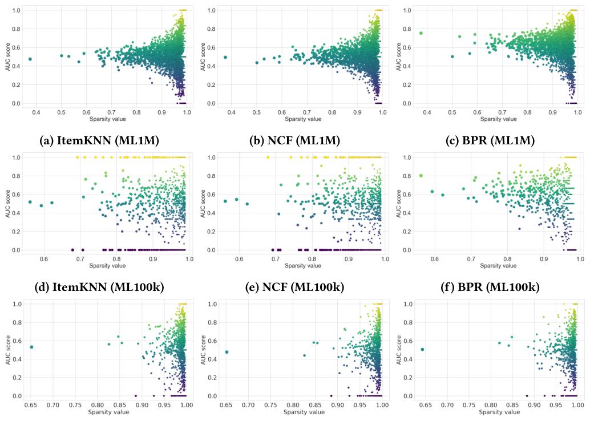

Efficient and Responsible Adaptation of Large Language Models for Robust Top-k Recommendations (面向鲁棒 Top-k 推荐的大模型高效且负责任的适配)
- 会议/期刊: TORS 2026
- 作者与机构: Kirandeep Kaur, Chirag Shah（University of Washington）
- 推荐链路定位: 重排（LLM 条件重排 + 级联任务分配）
- 研究方向: 大语言模型推荐 (LLM4Rec) / 去偏公平与可信推荐
- 论文原文: https://arxiv.org/abs/2405.00824v1
- 开源代码: 匿名仓库（匿名评审版）
TL;DR (1分钟核心速览)
传统 RS 在 ERM 下对所有样本均匀优化，导致稀疏用户子群体排名质量塌陷；而把百万级用户全量交给 LLM 重排又会因长 prompt 推高成本与延迟。本文提出混合任务分配框架：用「稀疏度指数 \(SI(u)\)+ 实例级 AUC\(P(u)\)」双阈值筛出弱用户，只对这些用户构造 In-Context 排序指令交给 LLM，强用户仍走 RS。在 ML-1M/ML-100k/Book-Crossing 三数据集上，弱用户 AUC 相对提升最高达 202%，弱用户数量下降约 85–99%，ML-100k 上 LLM 调用开销由 7,544 s 降至 2,640 s（约省 65%）。
Background & Motivation (背景与核心矛盾)
- 主流范式: 用 LLM 作为 zero-shot/few-shot 重排器（recency-focused prompting、ProLLM4Rec 等），由传统 RS 检索候选、LLM 冻结参数重排。
- 前人局限 1（成本侧）: 每个用户的历史都塞进 prompt，单次查询延迟 8–11 s，百万级用户不可行；因此已有工作只能随机采样少量用户评估，结论泛化性存疑。
- 前人局限 2（鲁棒侧）: 以往只按活跃度粗粒度分组（active vs inactive），或做后处理重排去偏；但后处理会牺牲头部用户效用，且"inactive"并不等于"被模型服务失败"。
- 核心洞察 (Key Insight): AUC 对子采样保持一致（\(k\) 缩小时所有 top-k 指标退化为 AUC），故适合做实例级"难度"判据；散点图（图 3）显示并非所有稀疏用户都表现差——只有"高稀疏 ∧ 低 AUC"这一交集才是真正需要干预的弱用户。
- 本文切入点: 不做"是否使用 LLM"的全局二选一，而做任务分配——把 LLM 算力当作稀缺资源，按实例投放到 RS 失效处。

Method (核心方法设计)
1. 整体框架 (Overall Architecture)
系统为两阶段级联：先用基座 RS（ItemKNN / NCF / BPR）在全库打分，并用测试集计算每个用户的 AUC 型表现 \(P(u)\)与稀疏度\(SI(u)\)；满足\(P(u)\le t_p \wedge SI(u)>t_s\)者进入弱用户池。随后只为弱用户生成指令：把训练期交互按评分降序写成偏好条件\(H_u\)，把候选集\(C_u\) 打乱后拼接，交给冻结的 LLM 做零样本列表排序；若 LLM 排序质量优于 RS 则采纳，否则回退。全程无任何微调，RS 与 LLM 各自承担擅长的子任务。
flowchart TD
A["D_train 训练 RS θ_r，D_test 逐用户评估"] --> B["P(u)=AUC(u); SI(u)=|R|/N"]
B --> C{"P(u) ≤ t_p 且 SI(u) > t_s ?"}
C -->|强用户| D["直接输出 RS Top-k"]
C -->|弱用户| E["构造 I_u = H_u ⊕ C_u（20 条偏好降序 + 打乱候选）"]
E --> F["LLM θ_l 零样本 In-Context 排序"]
F --> G["优于 RS 则替换，否则回退 RS"]2. 关键设计拆解 (Key Designs)
-
实例级难度度量 \(P(u)\)（用 AUC 代替 NDCG 做"体检"）：top-k 指标依赖\(k\) 且丢弃尾部，无法在不同用户间公平比较；本文对每个用户计算正负物品对的全覆盖配对准确率 \(P(u)=\frac{1}{|R|(N-|R|)}\sum_{r\in R}\sum_{r'\in\{1,\dots,N\}\setminus R}\mathbb{I}(r<r')\) 其采样一致性保证"用户级难易"判据在小样本评测下不漂移，是任务分配可复现的前提。
-
双阈值弱用户定义（先分群、再筛实例）：先用 \(SI(u)=|R|/N\)与\(t_s=\text{avg}(SI(\mathcal{D}))\)划出稀疏子群，再用\(P(u)\le t_p\) 在其中挑出真正被服务失败的实例： \(u\in\mathcal{U}_{weak}\ \Leftrightarrow\ P(u)\le t_p\ \wedge\ SI(u)>t_s\) 直觉是"稀疏"只是必要非充分条件——若稀疏用户与活跃用户高度相似，RS 仍能借协同信号排序，盲目干预纯属浪费预算。
-
偏好降序 + 候选打乱的指令构造与回退机制：\(I_u=H_u\oplus C_u\)，\(H_u\)按显式评分降序表述（"most preferred"），\(C_u\) 故意 shuffle 以检验 LLM 是否真在排序而非抄顺序，并强约束"只能从候选集输出"。最终交付前做质量门控（LLM 结果优于 RS 才采纳），把幻觉风险隔离在弱用户局部。
-
训练目标与推理开销：无新增损失函数，基座模型沿用 BPR/交叉熵原目标训练；负采样沿用各模型默认策略（BPR 采样负例、NCF 全softmax 类实现）。推理端为"1 次 RS 全库打分 + 仅弱用户 1 次 LLM 调用"，单查询延迟 GPT-3.5-turbo ≈8 s、Mixtral-8×7b ≈11 s。
Experimental Setup & Evaluation Protocol (实验设置与评估协议)
- 数据集与预处理:
| 数据集 | #Users | #Items | #Interactions | 稀疏度/密度 | 特征/场景说明 |
|---|---|---|---|---|---|
| ML-1M | 6,041 | 3,952 | 1,000,209 | 95.81% / 4.19% | 电影，显式 1–5 分，每人 ≥20 条免过滤 |
| ML-100k | 943 | 1,682 | 100,000 | 93.7% / 6.3% | 电影，同上，最稠密数据集 |
| Book-Crossing | 6,810 | 9,135 | 114,426 | 99.82% / 0.18% | 图书，0–10 分，剔除 <20 条评分用户 |
- 数据划分与防穿越: 随机比例划分 80%/10%/10%（train/val/test），非 Leave-One-Out、非时间戳切分——存在轻度未来信息穿越风险。
- 排名评测协议: RS 侧 \(P(u)\)在全部\(N\) 物品上计算（Full-Ranking 无偏）；LLM 侧候选集取测试正样本集合（原文："select items which served as test items as candidate items"），属于小候选集排序，两侧任务难度不等。指标同时报告 AUC 与
NDCG@10。 - 对比基线与超参: 基座 RS 三类（ItemKNN、NCF、BPR，均基于 RECBOLE 实现），LLM 两个（GPT-3.5-turbo 闭源、Mixtral-8×7b-instruct 开源），prompt 统一采样 20 条历史；BPR 学习率搜索 \([5e^{-5},7e^{-3}]\)，NCF\([5e^{-7},1e^{-3}]\)，MLP 隐层\([64,32,16]\)，dropout\(\in\{0,0.1,0.3\}\)；ItemKNN 的\(k\in[10,400]\)、shrink\(\in[0,2]\)。未报告显著性检验。
Key Experimental Results (实验关键数据)
1. 主实验对比 (Main Results)
| 数据集 | 基座模型 | AUC (RS) | +GPT-3.5 | +Mixtral | AUC_weak (RS) | +GPT_weak | +Mixtral_weak |
|---|---|---|---|---|---|---|---|
| ML-1M | ItemKNN | 0.4703 | 0.5814 | 0.5604 | 0.2378 | 0.5178 | 0.5171 |
| ML-1M | NCF | 0.4781 | 0.5894 | 0.5721 | 0.2295 | 0.5212 | 0.5210 |
| ML-1M | BPR | 0.5796 | 0.6540 | 0.6417 | 0.3782 | 0.5200 | 0.5197 |
| ML-100k | ItemKNN | 0.4562 | 0.5978 | 0.5997 | 0.2478 | 0.5195 | 0.5233 |
| ML-100k | NCF | 0.4831 | 0.6083 | 0.6117 | 0.2518 | 0.5090 | 0.5090 |
| ML-100k | BPR | 0.5163 | 0.6387 | 0.6491 | 0.1702 | 0.5144 | 0.5214 |
| B-C | ItemKNN | 0.4331 | 0.6163 | 0.5520 | 0.2591 | 0.4971 | 0.4722 |
| B-C | NCF | 0.5185 | 0.6195 | 0.5990 | 0.2900 | 0.5051 | 0.4990 |
| B-C | BPR | 0.5331 | 0.6215 | 0.6163 | 0.2443 | 0.5100 | 0.5008 |
代表性提升幅度（AUC，+GPT-3.5）：ML-1M ItemKNN +23.6%、BPR +12.8%；ML-100k ItemKNN +31.0%；Book-Crossing ItemKNN +42.3%、BPR +16.6%。弱用户侧：ML-100k BPR 弱用户 AUC +202%（0.1702→0.5144），ML-1M ItemKNN +117.8%，Book-Crossing BPR +108.8%。NDCG@10 同样全面上升，ML-1M BPR 的弱用户 NDCG@10 由 0.7400 升至 0.8212（+11.0%）。
2. 消融实验 (Ablation Study)
原文未做严格组件消融，以下为其实验中可提取的变体/成本对照：
| 设置 | ML-1M | ML-100k | Book-Crossing | 额外推理开销 |
|---|---|---|---|---|
| w/o LLM（纯 RS） | 弱用户 100% 保留 | 同 | 同 | 0 s |
| + GPT-3.5（仅弱用户） | 弱用户 −87% | −88% | −87% | ≈8 s/query；ML-100k 最多 330 次 ≈2,640 s |
| + Mixtral（仅弱用户） | −85% | −99% | −85% | ≈11 s/query |
| LLM 服务全体用户（假想） | — | — | — | 943 次 ≈7,544 s（≈3× 于分配方案） |
3. 关键实验发现 (Key Findings)
- 收益集中在尾部而非头部：ML-1M 上 BPR+GPT 的整体 AUC 仅
+12.8%，但弱用户 AUC 提升+37.5%；而强用户完全走 RS、其推荐列表未被动过，整体 NDCG@10 仍从 0.8883 升至 0.9010——说明增益来自补齐长尾而非重排头部，符合"负责任适配"的设计意图。 - 开源模型并非全面落后，选型应由数据密度决定：ML-100k（密度 6.3%）上 Mixtral 反超 GPT-3.5（AUC 0.5997 vs 0.5978，弱用户数降幅 99% vs 88%）；但 Book-Crossing（密度 0.18%）上 GPT-3.5 领先 6.4 个 AUC 点（0.6163 vs 0.5520）。稠密小数据用开源、极端稀疏用闭源是更省的组合。
- 阈值筛选带来的成本节约是量级性的：ML-100k 仅 943 用户中最多 330 个被判为弱用户（ItemKNN 最差情形），LLM 调用开销 2,640 s 对比全量 7,544 s，节省约 65%，同时弱用户数下降 88%——证明"少调用但调对人"可同时改善鲁棒性与经济性。
Highlights & Limitations (亮点、对比与审稿批判)
- 与代表作对比 (vs. Prior Work): 与 Hou et al. 的 recency-focused prompting、ProLLM4Rec 相比，本文不改进 prompt 本身（明确声明任何 prompting 策略都可嵌入），而是新增实例级选择器这一被忽视的环节；与 Li et al. 的后处理再排序去偏相比，本文不改动强用户列表，避免"以头部效用换公平"的权衡。
- 可迁移亮点: (1) 用 AUC 的采样一致性作为"实例难度"判据，可迁移到 any 召回-精排级联的难例挖掘；(2) "+LLM 结果优于基线才采纳"的门控回退机制，是所有级联式 LLM 重排的低风险落地范式。
- 审稿级局限批判: (1) 候选集不对称——RS 的 \(P(u)\)在全部\(N\)物品上计算，而 LLM 只在测试正样本内排序，两侧任务难度不可比，
+LLM的绝对增益很可能被高估；(2) 实验规范瑕疵——无显著性检验、无真正组件消融，且表 2 中 ML-1M 与 ML-100k 的基线NDCG@10列数值完全重复（0.66792/0.58226 等），疑似制表错误；(3) 阈值符号不一致：定义 3.1 写\(SI(u)>t_s\)表示"更稀疏/inactive"，算法 1 与 3.4 节文字却写成"falls below\(t_s\)"；(4) 每用户 20 条历史 + 8–11 s 延迟，虽经筛选，百万级用户场景仍需批处理或小模型蒸馏才能落地。
Rating (四维评分)
- 方法创新性 (Novelty): ⭐⭐⭐ （创新在"任务分配策略"而非模型结构，AUC 作为实例级判据的论证扎实，但无新学习算法或理论分析）
- 评估协议与实验扎实度 (Protocol & Experiments): ⭐⭐⭐ （三数据集、3 基座 × 2 LLM 的组合较全面，但随机划分、无显著性检验、缺组件消融，且 LLM/RS 候选空间不一致削弱说服力）
- 写作与数学规范度 (Clarity & Rigor): ⭐⭐⭐ （定义-算法-正文三处阈值方向表述冲突，表 2 数值重复，公式本身简洁清晰）
- 工业落地与复现价值 (Industrial & Practical Value): ⭐⭐⭐⭐ （即插即用于任何 RS 级联，含明确时延/成本核算与回退门控，匿名代码可复现，工程价值突出）